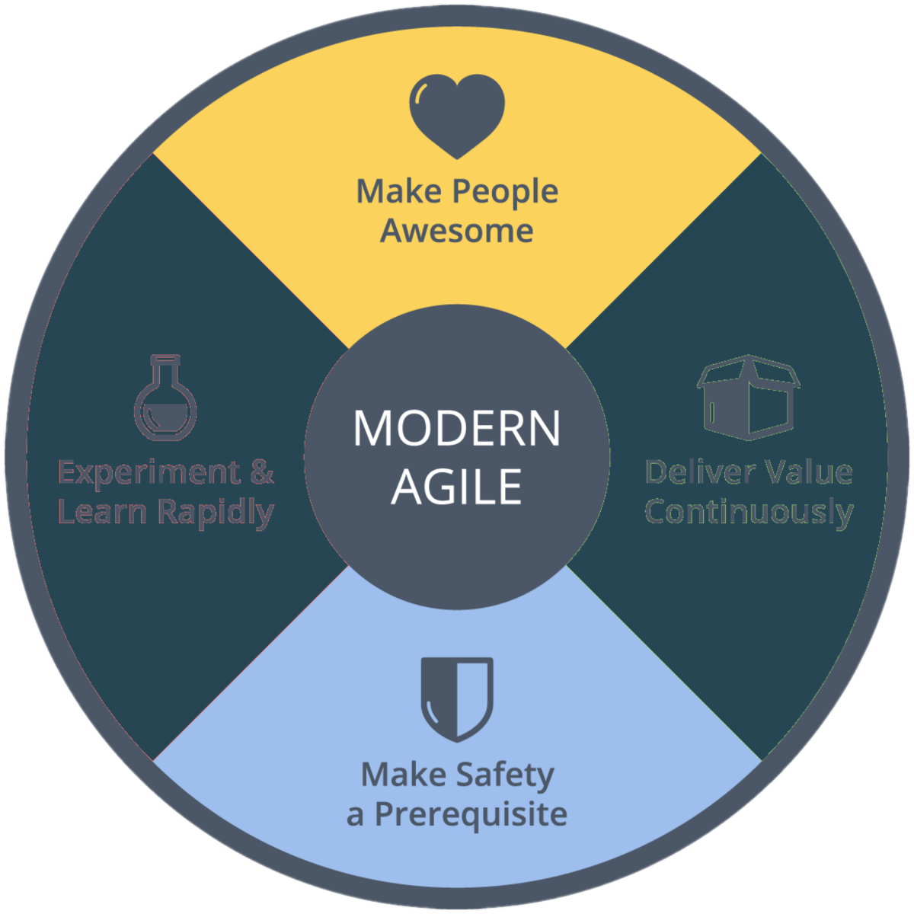
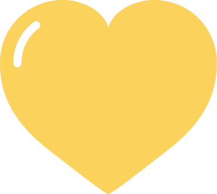
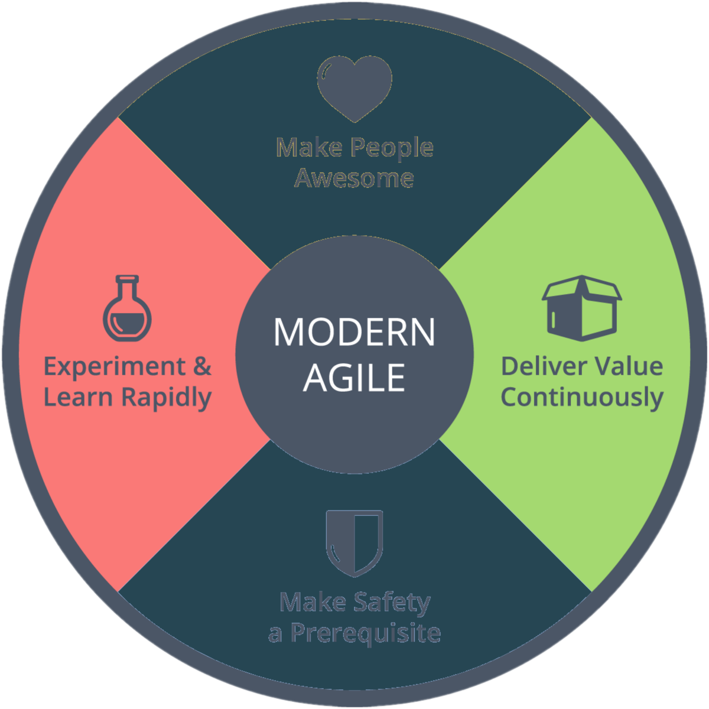
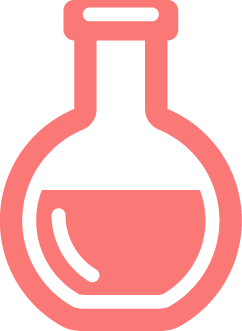
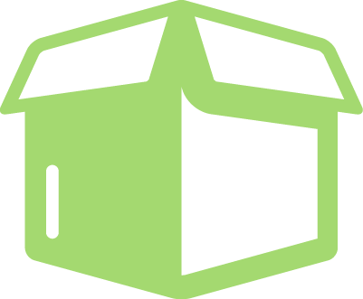

This site is to help anyone interested in modern agile to understand some of the basics.
The Modern Agile badge encapsulates the four principles of Modern Agile.

The Vertical elements from the badge are Make People Awesome and Make Safety a Prerequisite.
The vertical elements primarily represent the human factor of the modern agile process.

Make People Awesome refers to both those who are working on the code as well as our customers.
The goal is always to make people Awesome or at least more awesome than they were.
Make Safety a Prerequisite is the element that recognizes everyone needs to feel safe if they are going to do our best work.

The horizontal elements from the badge are Experiment and Learn Rapidly & Deliver Value Continuously.
The horizontal elements primarily represent the mechanics of the modern agile process.

Experiment and Learn Rapidly speaks to the requirement to try new things and always improve.

Deliver value Continuously speaks to the requirement to actually get work done and deliver something that adds value.